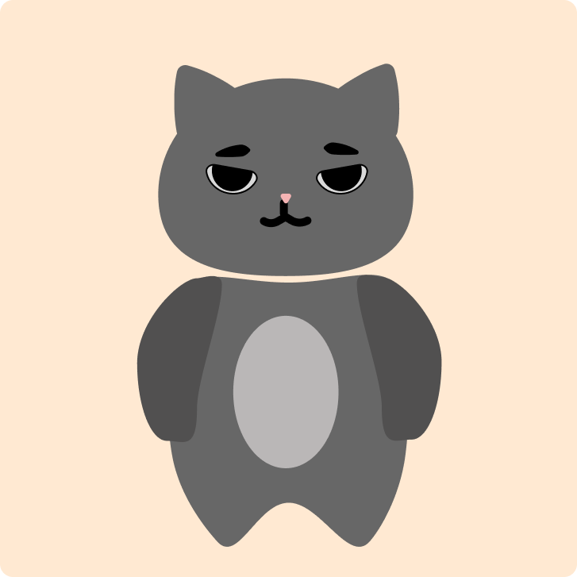

Projects
Selected Works
Project 01
Bobo Studios x A Muse Me
Designed logos with variations, creating color palettes, and making mockups to fulfill client needs of having a brand language.

Project 02
IAT201 Relaxation Device
A team-designed portable productivity and relaxation device for students that reduces digital distraction through intuitive affordances, multi-sensory interaction, and a focused, phone-free experience.
